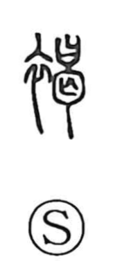

褐

Uncategorized
Kun: | On: katsu
brown ・ coarse hemp cloth ・ rough clothing
Explanation
A phono-semantic graph built with the clothing radical and the phonetic 曷, which supplies the on reading katsu. In early usage it named a coarse, rough hemp textile whose natural tone was a dark brown, and from this the sense “brown” arose. The cloth appears in words such as kappaku, a padded kimono-like jacket made from it; kappu, a man of the lower class marked by wearing such a jacket; and katsui, rough hempen clothes. In the set phrase kyukatsu—fur for winter (裘) and hemp for summer (褐)—it can also stand for the full cycle of a year.